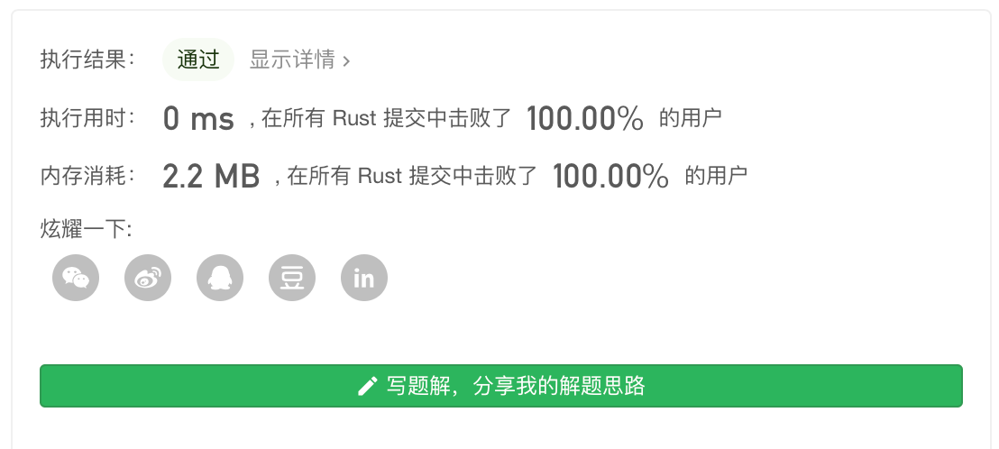

Leetcode 第166题 分数到小数
给定两个整数，分别表示分数的分子 numerator 和分母 denominator，以字符串形式返回小数。
如果小数部分为循环小数，则将循环的部分括在括号内。
示例 1:
输入: numerator = 1, denominator = 2 输出: "0.5"
示例 2:
输入: numerator = 2, denominator = 1 输出: "2"
示例 3:
输入: numerator = 2, denominator = 3 输出: "0.(6)"
解题思路
这道题目 难点之一 是怎么找到 有限循环小数的循环节, 而这要用到数学方面的知识,
那么 我们小学数学都学过 已知循环节 找到对应的分数。
比如 0.6666 循环节 就是 0.6 => 6/9 =2/3
比如 0.232323 循环节 就是0.23 => 23/99
比如 0.107 循环节 就是 0.107 => 107/999
反过来求解的话
举个例子 2/3：
2(被除数) / 3(除数) =0 (商) ....2(余)
2(上一轮余数) * 10(被除数) / 3(除数) = 20(新的被除数) / 3 (除数) = 6(商) ..... 2(余数)
下面 我们再一次 拿上一轮的余数 * 10,结果还是一样的。
2(上一轮余数) * 10(被除数) / 3(除数) = 20(新的被除数) / 3 (除数) = 6(商) ..... 2(余数)
从上面的公式 我们将 第一次 的商 为整数部分,后面的位小数部分
那么 就有 0.6
再来举个例子
23 / 99 = 0 ....23
23 * 10 / 99 = 2 ...32
32 * 10 / 99 = 3 ....23(余数重复出现)
23 * 10 / 99 = 2 ...32
从上面的公式 我们将 第一次 的商 为整数部分,后面的位小数部分
那么 就有 0.23
.....
上面就是一种判断,循环节的方法,我们只要记录每次的余数如果下一次 重复出现这个余数那么 就可以认为就是下一次循环节的开始。
算法实现
算法实现上我们只要使用求余公式,然后 每次的 余数 * 10 当做新的 被除数 再去除以 除数,然后每次把余数记录下,可以用hash表效率比较高,重复出现的余数就是循环节的开始。
| 需要处理的类型 | 解释 |
|---|---|
| 0/1 | 被除数为 0。 |
| 1/0 | 假设不存在 |
| 20/4 | 整除5 |
| 1/2 | 0.5 有限小数 |
| -1/4 或 1/-4 | 结果为负数,输入一个为正,一个为负 |
| -1/-4 | 结果为正数,但是输入是2个负数 |
| −2147483648 /-1 | 可能存在 越界 |
对于 正数 触发 我们判断下 余数 为 0 代表是有限小数 直接返回即可。
对于一些特殊情况,如 负数 我们需要把 余数 和商 都 转化成 正数 当做正数去计算,返回结果时 加上负号即可。
对于上表最后 由于i32 所能表示的整数范围 比 负数范围 少 1 正数范围 为 0~ 2 ** 31 -1 =[0,2147483647] 负数范围 为 -1 ~ 2**31 =[-1,-2147483648]
所以 −2147483648 / -1 =2147483648 超出了i32表示的最大值就会溢出。
所以 我们在处理的时候 需要 把 i32 转换成 i64 来防止溢出.
use std::collections::HashMap; use std::borrow::Borrow; pub fn fraction_to_decimal(numerator: i32, denominator: i32) -> String { //转换为 i64类型 防止溢出 let numerator = numerator as i64; let mut denominator = denominator as i64; let mut res = String::new(); let mut quotient = numerator / denominator ; let mut remainder = numerator % denominator ; let mut isnav = false; //如果余数为 6 能被整除 ,那么直接返回 if remainder == 0 { return quotient.to_string(); } //处理负数的情况 如果 结果为 - 的 那我们这里标记下 后面还是按正数处理,最后返回的时候加上 - if (numerator * denominator ) < 0 { quotient *= -1; isnav = true; } //把负数转化为正数处理 if remainder < 0{ remainder *=-1; } //把负数转化为正数处理 if denominator < 0{ denominator *=-1; } //小数点后面 索引 可以记录 let mut i = 0; let mut gap = helprer(quotient) ; let mut recoder = HashMap::new(); loop{ if i == 0 {res += (quotient.to_string() + ".").as_ref();i +=1; }else { res +=quotient.to_string().as_ref() } if recoder.contains_key(remainder.borrow()){ let index = recoder.get(remainder.borrow()).unwrap(); if remainder == 0 { res.remove(res.len()-1); break; } //gap 是整数部分的打大小 *index + gap 是 整数部分 + 循环节从小数点后其实位置 res.insert((*index + gap) as usize,'('); res.push(")".parse().unwrap()); break; } recoder.insert(remainder,i); quotient = remainder * 10 / denominator ; remainder = remainder * 10 % denominator; i+=1; } //如果是结果是负的 最后返回的值 加上 - if isnav { res.insert(0,"-".parse().unwrap()); return res; } res } //计算整数部分大小 pub fn helprer(num:i64) -> i32{ if num == 0{ return 1; } let mut num = num; let mut res = 0; while num >=1{ num /=10; res +=1; } res } fn main() { println!("{}", fraction_to_decimal(2147483647,370000)); }